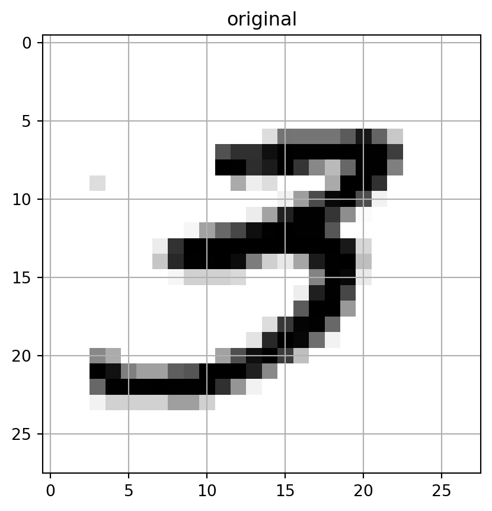
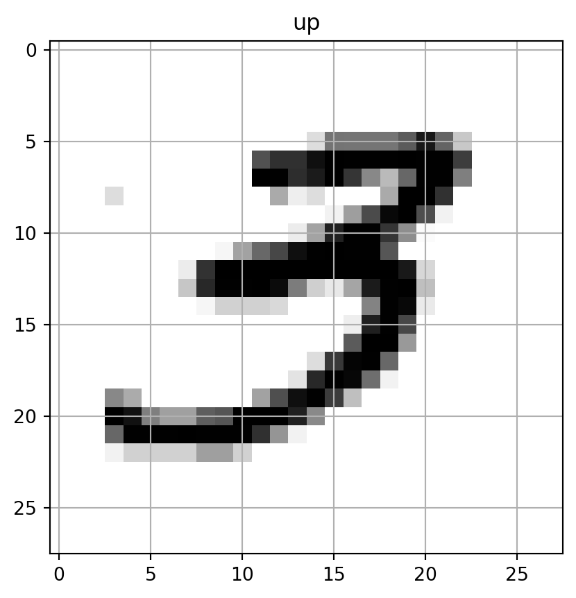
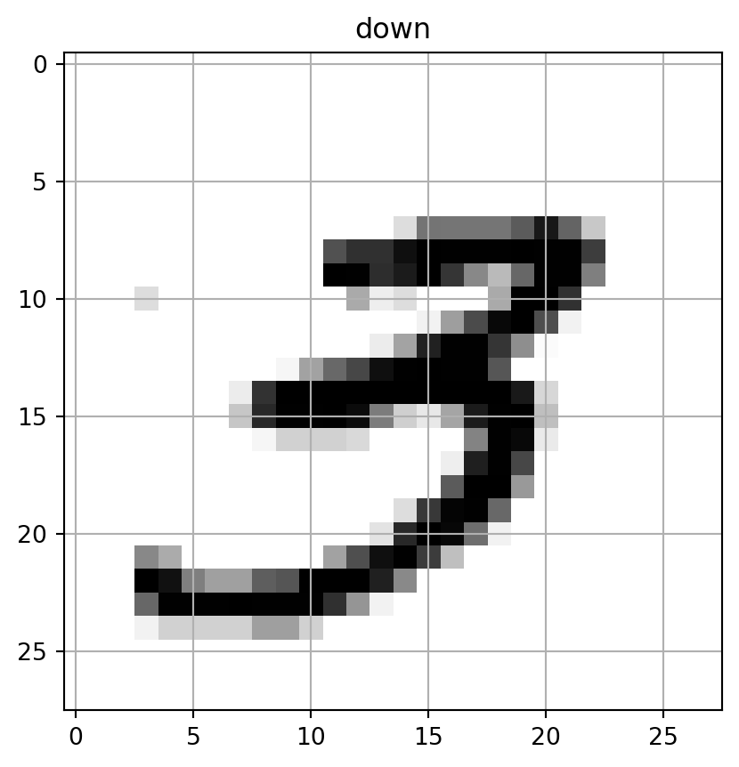
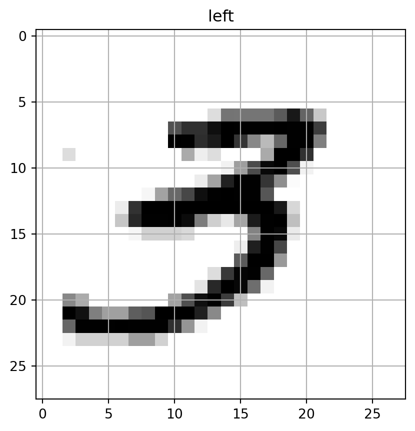
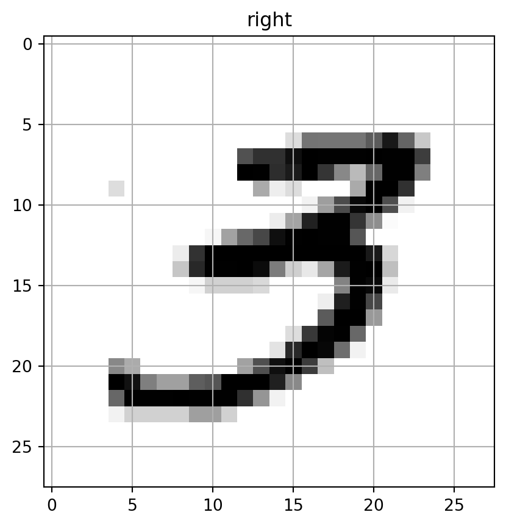
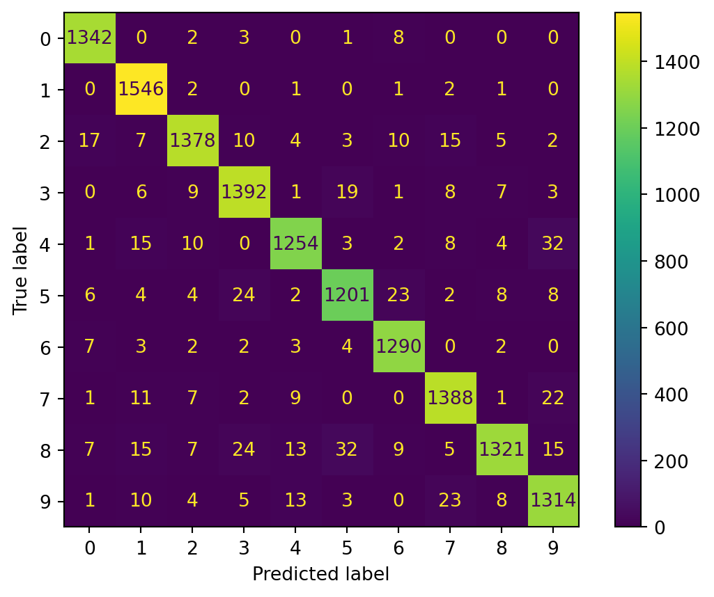

import time
import os
from tqdm import tqdm
import numpy as np
import pandas as pd
from sklearn.neighbors import KNeighborsClassifier
from sklearn.metrics import precision_recall_curve, f1_score, roc_auc_score, roc_curve
from sklearn.preprocessing import StandardScaler
from sklearn.model_selection import cross_val_predict, train_test_split, GridSearchCV
from sklearn.datasets import fetch_openml
from sklearn.metrics import confusion_matrix, classification_report, accuracy_score
from sklearn.metrics import ConfusionMatrixDisplay
import matplotlib.pyplot as plt
import plotnine as p9Introduction
A common technique to expand the training set is called data augmentation. In our case, we’re working with \(\mathbb{R}^{28 \times 28}\) matrices representing pixels and we can shift those pixels by 1 up, down, left and right to increase the training set size.
Image Shifting as Data Augmentation
Suppose each image in the training set is represented as a matrix
\[ X \in \mathbb{R}^{28 \times 28}, \quad X = (x_{ij}), \quad i,j \in \{1,\dots,28\}, \]
where \((x_{ij}\) is the pixel intensity at row (i), column (j).
Pixel Reindexing View
Shifting is a reindexing operation with zero-padding at the edges:
- Up shift:
\[ (X^{\uparrow})_{ij} = \begin{cases} x_{i+1,j}, & 1 \leq i \leq 27 \\ 0, & i = 28 \end{cases} \]
- Down shift:
\[ (X^{\downarrow})_{ij} = \begin{cases} x_{i-1,j}, & 2 \leq i \leq 28 \\ 0, & i = 1 \end{cases} \]
- Left shift:
\[ (X^{\leftarrow})_{ij} = \begin{cases} x_{i,j+1}, & 1 \leq j \leq 27 \\ 0, & j = 28 \end{cases} \]
- Right shift:
\[ (X^{\rightarrow})_{ij} = \begin{cases} x_{i,j-1}, & 2 \leq j \leq 28 \\ 0, & j = 1 \end{cases} \]
Effect on the Dataset
If the original dataset is
\[ \mathcal{D} = \{X^{(1)}, X^{(2)}, \dots, X^{(N)}\}, \]
the augmented dataset becomes
\[ \mathcal{D}' = \bigcup_{k=1}^N \{\,X^{(k)}, \, X^{(k)\uparrow}, \, X^{(k)\downarrow}, \, X^{(k)\leftarrow}, \, X^{(k)\rightarrow}\}. \]
Thus, the dataset size grows from \(N\) to \(5N\).
Why do this?
Data Augmentation is a very useful technique to get more data from existing data to increase the accuracy of our models.
For our purposes, we’ll be fitting a KNN model to this expanded dataset without regularization.
Note
Regularization on the original dataset took 14 minutes so the expanded dataset could reasonably take up to 25 times longer than the original as its computational complexity is \(O(n^2)\)
Implementation
Preparing Environment
mnist = fetch_openml("mnist_784", as_frame=False)
X,y = mnist.data, mnist.target
X_train, X_test, y_train, y_test = train_test_split(X,y, train_size=0.8)Data Augmentation
test = X_train[0].reshape(28,28)
def shift_image(image : np.ndarray, direction: str) -> np.ndarray:
copy = image.copy()
if direction == "left":
copy = np.roll(image,shift= -1, axis=1)
copy[0,:-1] = 0
elif direction == "right":
copy = np.roll(image, shift = 1, axis=1)
copy[0,:] = 0
elif direction == "up":
copy = np.roll(image, shift=-1, axis=0)
copy[:,-1] = 0
elif direction == "down":
copy = np.roll(image, shift=1, axis=0)
copy[:,0] = 0
return copy
def plot_digits(image, title :str):
plt.grid(visible=True)
plt.title(label=title)
plt.imshow(image, cmap="binary")
plt.show()
plot_digits(test, "original")
up = shift_image(test, "up")
plot_digits(up, "up")
down = shift_image(test, "down")
plot_digits(down, "down")
left = shift_image(test, "left")
plot_digits(left, "left")
right = shift_image(test, "right")
plot_digits(right, "right")




print("Original Training Date Shape:",X_train.shape)
print("Original Training Label Shape:",y_train.shape)
print("Single Instance flattened:",X_train[0].shape)
print("Reshaped Imaged Shape:",X_train[0].reshape(28,28).shape)
def AugmentInstance(X,y, idx) -> None:
image = X[idx].reshape(28,28)
left = shift_image(image, "left").flatten()
left.shape
right = shift_image(image, "right").flatten()
up = shift_image(image, "up").flatten()
down = shift_image(image, "down").flatten()
X = np.append(X, [left,right,up,down], axis=0)
y = np.append(y, [y[idx],y[idx],y[idx],y[idx]])
return X,y
# for idx in tqdm(range(0, X_train.shape[0]),desc="Augmenting..."):
# X_train,y_train = AugmentInstance(X_train, y_train, idx)
print("Augmented Training Data Shape:", X_train.shape)
print("Augmented Training Label Shape:", y_train.shape)Original Training Date Shape: (56000, 784)
Original Training Label Shape: (56000,)
Single Instance flattened: (784,)
Reshaped Imaged Shape: (28, 28)
Augmented Training Data Shape: (56000, 784)
Augmented Training Label Shape: (56000,)This above code is my first attempt with an expected execution time of 85 minutes. Its quite trash.
The concept of vectorization
We can vectorize the dataframes and do the shifts all at once.
X_images = X_train.reshape(-1,28,28)
def shift_image(X, direction) -> np.ndarray:
images = X.reshape(-1,28,28)
if direction == "left":
shifted = np.roll(images, shift=-1,axis=1)
shifted[:,:,-1] = 0
elif direction == "right":
shifted = np.roll(images, shift=1,axis=1)
shifted[:,:,0] = 0
elif direction == "up":
shifted = np.roll(images, shift=-1, axis=2)
shifted[:,:,-1] = 0
elif direction == "down":
shifted = np.roll(images, shift=1, axis=2)
shifted[:,:,0] = 0
return shifted.reshape(56000,784)
left = shift_image(X_train, "left")
right = shift_image(X_train, "right")
down = shift_image(X_train, "down")
up = shift_image(X_train, "up")
X_train = np.append(X_train, values=left, axis=0)
X_train = np.append(X_train, values=up, axis=0)
X_train = np.append(X_train, values=down, axis=0)
X_train = np.append(X_train, values=right, axis=0)
y_train = np.append(y_train, [y_train,y_train,y_train,y_train])
print(X_train.shape)
print(y_train.shape)(280000, 784)
(280000,)This is almost instant! Its quite difficult to determine how to vectorize a transformation so I need to do some more exercises where this is done.
Preprocessing
scaler = StandardScaler()
X_train = scaler.fit_transform(X_train)
X_test = scaler.fit_transform(X_test)Fitting a normal KNN Model
I determined the optimal hyperparameters for the model by hypertuning the reduced dataset and that is what will be used here.
\(n_neighbors=4\) \(weights=distance\)
knn_clf = KNeighborsClassifier(n_neighbors=4,weights="distance")
base_y_test_pred = cross_val_predict(knn_clf, X_train, y_train)
print("Accuracy:", accuracy_score(y_train, base_y_test_pred))
classification_report(y_train, base_y_test_pred)
print("F1 Score", f1_score(y_train, base_y_test_pred, average="macro"))Accuracy: 0.9193071428571429
F1 Score 0.9190006745203634Results on Test Set
knn_clf = KNeighborsClassifier(n_neighbors=5, weights="distance")
knn_clf.fit(X_train, y_train)
y_pred = knn_clf.predict(X_test)
classification_report(y_test, y_pred)' precision recall f1-score support\n\n 0 0.97 0.99 0.98 1356\n 1 0.96 1.00 0.98 1553\n 2 0.97 0.95 0.96 1451\n 3 0.95 0.96 0.96 1446\n 4 0.96 0.94 0.95 1329\n 5 0.95 0.94 0.94 1282\n 6 0.96 0.98 0.97 1313\n 7 0.96 0.96 0.96 1441\n 8 0.97 0.91 0.94 1448\n 9 0.94 0.95 0.95 1381\n\n accuracy 0.96 14000\n macro avg 0.96 0.96 0.96 14000\nweighted avg 0.96 0.96 0.96 14000\n'ConfusionMatrixDisplay.from_predictions(y_test, y_pred)
print("Accuracy:", accuracy_score(y_test, y_pred))
print("F1 Score:", f1_score(y_test, y_pred, average="macro"))Accuracy: 0.959
F1 Score: 0.9587125098025602